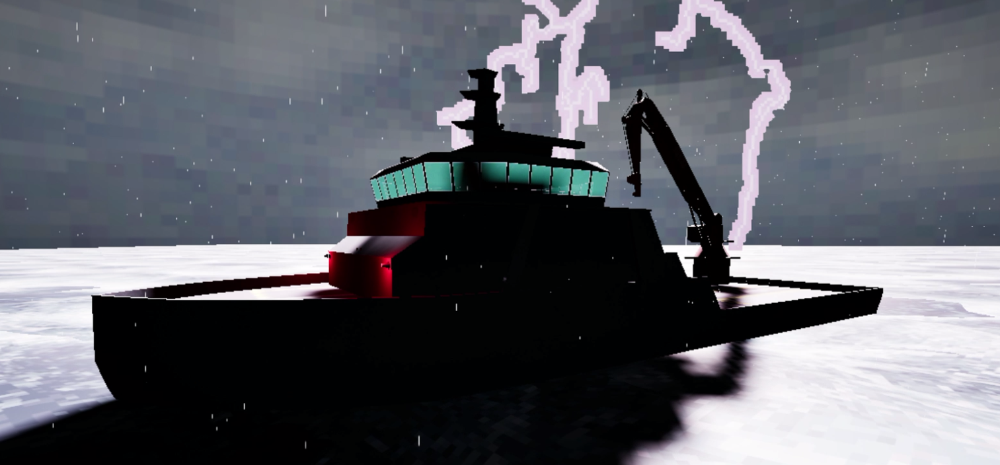
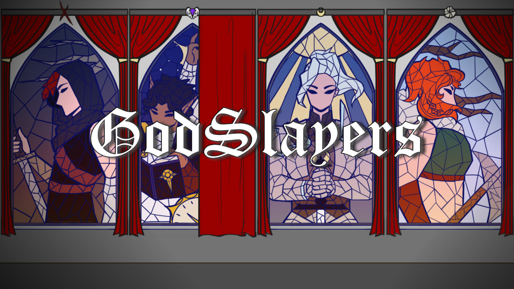
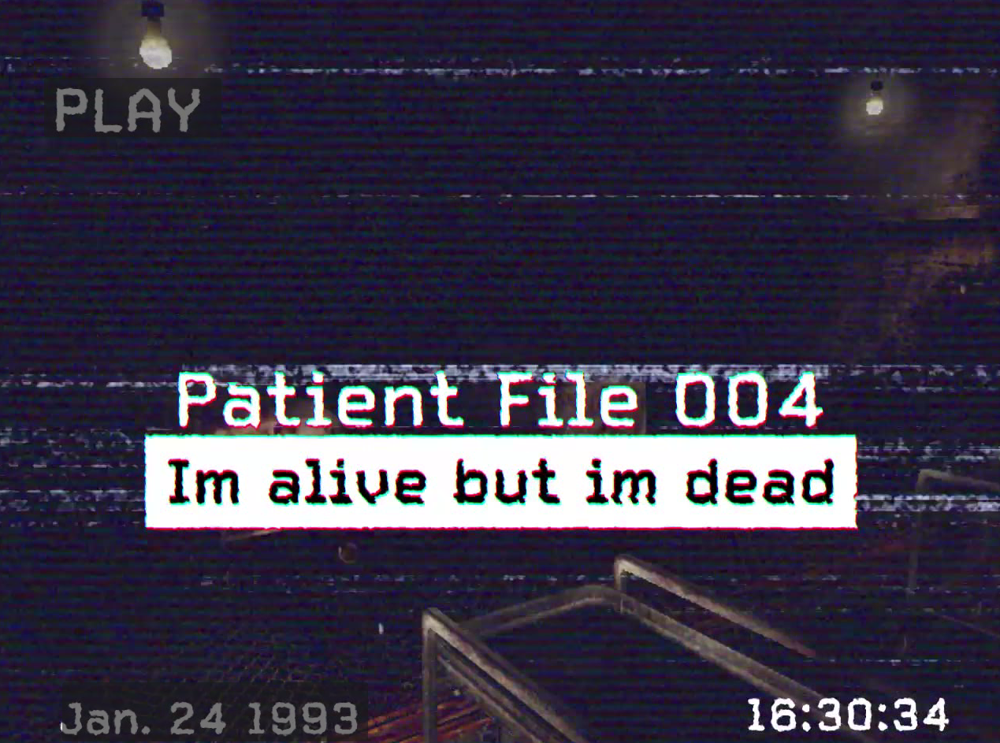
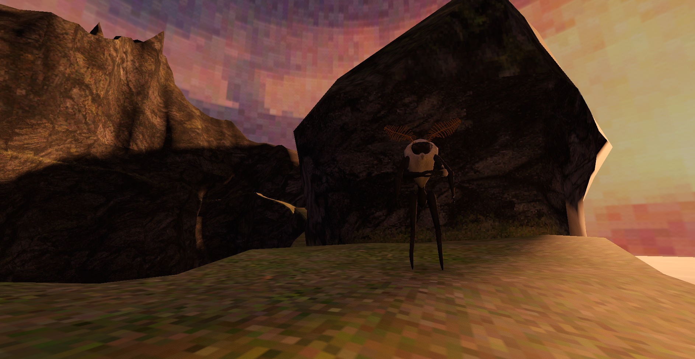

Henry Tripp Barrick
2024
Shiagemp
A survival horror game set aboard an abandoned ship. This was a solo project developed in tandem with Godslayers and made in Unreal Engine 5.
Link to the Project.Godslayers
A story-driven turn based game. This was devloped as a part of my capstone project where I served as the main programmer.
2023
Patient 004
A puzzle game I worked on as a part of a capstone course. This was made in Godot where I served as the programmer and one of many 3D artists. This was a multi person project with around 10 people working on it in total.
Link to the Project.Amotheosis
A walking simulator where the player goes up a mountain path for a moth. This was the first completed solo project I worked on. A download for this project is not publically avaliable.